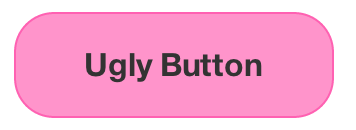
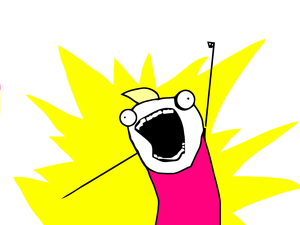
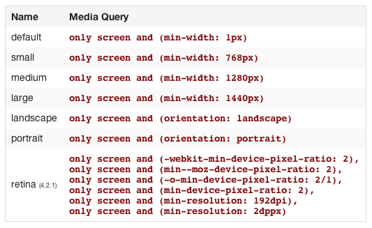

TL:DR;
Foundation v4
Created by James Vivian / @jvivs

"The most advanced responsive front-end framework in the world."

Really?
Let's see…
Grids!
Now for all shapes and sizes.
Sensible defaults
$screen: "only screen";
$small: "only screen and (min-width:"#{$small-screen}")";
$medium: "only screen and (min-width:"#{$medium-screen}")";
$large: "only screen and (min-width:"#{$large-screen}")";
$landscape: "only screen and (orientation: landscape)";
$portrait: "only screen and (orientation: portrait)";
start small
$small-screen: emCalc(768);
12 columns instead of 4
Step up to Medium*
$medium-screen: emCalc(1280);
Separate medium grids enable a design to respond with finesse.
*planned for v5, early release included in v4.3
Take it LARGE
$medium-screen: emCalc(1280);
Have lots of real estate? Take advantage!
But wait... there's more.
Backwards compatible with v3 grids for better IE8 support.
No pixel left behind.
Buttons
Mix and match.
All shapes and sizes
- .tiny
- .small
- .button
- .large
- .radius
- .round
- .expand
Even ugly ones:
CSS overrides?
&.active,
&:active {
// prevent underline in firefox
text-decoration: none;
.icon {
opacity: .6;
}
}
&.open {
.icon {
color: $mainColor !important;
opacity: 1;
}
}
// reset button corners if necessary
&.square {
@include border-radius(0);
}
/* Sizes */
&.large {
font-size: 15px;
padding: 7px 16px 6px;
.icon.oversized.icon-append {
margin: 2px -6px -1px 3px;
}
}
/* Colors */
// style is the same for all of these, so print them on one line to prevent repetition
&.primary,
&.success,
&.alert,
&.secondary,
&.gradient {
border: 0;
&:hover {
border: 0;
}
}
// darken background color (no transition), keep all shadows the same
@each $button-type in $button-types {
$type: nth($button-type, 1);
$color: nth($button-type, 2);
$active-color: nth($button-type, 3);
@if ($type == '.primary') {
@include button-colors($color, nth($active-color, 1), nth($active-color, 2));
}
&#{$type} {
@include button-colors($color, nth($active-color, 1), nth($active-color, 2));
}
}
// sharpen white-text on red bg
&.alert {
@include sharp-text($white);
}
// dark text on light background
&.secondary {
color: $btn-secondary-text-color;
.icon {
color: $black;
}
@include box-shadow(0 1px 0 darken($btnSecondaryColor, 15%), 0 0 1px transparentize(darken($btnSecondaryColor, 35%), .2), 0 1px 1px transparentize(darken($btnSecondaryColor, 25%), .2));
// light text on dark background
&.active,
&:active {
color: $white;
.icon {
color: $white;
}
}
// outer glow on :focus
&:focus {
@include box-shadow(0 1px 0 darken($btnSecondaryColor, 15%), 0 0 1px transparentize(darken($btnSecondaryColor, 25%), .2), 0 0 5px opacify($btn-secondary-text-color, 0.5));
}
}
// transperent button (on dark bg)
&.transparent {
background-color: transparent;
@include box-shadow(none);
color: $txtColor;
.icon {
color: $black;
&.icon-white {
color: $white;
}
}
&.on-dark {
@include sharp-text(darken($white, 20%));
.icon {
color: $white;
}
&:hover,
&.active,
&:active {
color: white;
background-color: transparent;
@include box-shadow(none);
}
}
}
&.gradient {
@include background-image(linear-gradient(top, #fbfbfb, #e5e5e5));
color: $btnGradientColor;
background-color: transparent;
@include box-shadow(none);
&, &:hover {
border: 1px $imageBorderColor solid;
}
.icon {
opacity: 1;
color: $btnGradientColor;
}
}
They work, but get tedious after a while.
Customize with SASS instead!
// We use this to quickly create buttons with a single mixin. As @jaredhardy puts it, "the kitchen sink mixin"
@mixin button($padding:$button-med, $bg:$primary-color, $radius:false, $full-width:false, $disabled:false, $is-input:false, $is-prefix:false) {
@include button-base;
@include button-size($padding, $full-width, $is-input);
@include button-style($bg, $radius, $disabled);
}
Buttons in all flavors
- Button groups
- Split buttons
- Dropdowns
Wait, didn't dropdowns turn out to be kind of a pain?
$('.some-dropdown-element').on('click', function () {
e.stopPropagation()
// do the rest of your stuff here
});
Dropdowns have been rewritten and are now easier to style, and easier to handle with javascript.
Bonus:
Anything can now host a dropdown
Has Dropdown
Has Content Dropdown
Button all the things!
Responsive Images
with Interchange
Images are one of the largest consumers of bandwidth.
Serve the right size for the right screen.
How?
The same way we adjust the design to different devices…
Media queries.
data-interchange="[image_path, (media query)], [image_path, (media query)]"

Tell me more
Sensible Defaults (again)
Custom Queries
$(document).foundation('interchange', {
named_queries : {
my_custom_query : 'only screen and (max-width: 200px)'
}
});
Retina support
(pixel-density is a media query too!)
Event notification
$(document).on('replace', 'img', function (e, new_path, original_path) {
// replace handler
});
Respond to new images dynamically
$(document).foundation('interchange', 'reflow');
Topnav
Mobile first, from the ground up.
Click here:
http://foundation.zurb.cominsert sweet slide showing how top nav renders on multiple devices and screen sizes
Notable Plugins
Modals with Reveal
Mobile first (I tested). Create workflows with linked modals.
Thumbnail plugin
Built as a mixin
- Better modals with Reveal (they link together too)
- Thumbnail plugin (again, customize with mixins)
- Abide HTML5 form validation at your disposal
- Pretty error messages
- Tooltips too!
Under the hood
emcalc is the new ms();
Translate between ems and px
Mixins, Mixins, Mixins
Still semantic markup, clean(er) and lightly applied styles
Dropped external SASS dependencies (Compass and Modular Scale)
Zepto Support
Worth checking out for mobile and modern devices.
9.7k vs 32k

Smoother upgrade path to v5
(famous last words)
Lower profile Javascript Namespace
$(document).foundation();
Follow in (LukeW's) mobile first footsteps!


No, seriously.
Recap:
Mobile first.
Sensible defaults.
Learn from better code.
Customize at will.

404 SLIDE_NOT_FOUND
BY James Vivian
jvivs @ {octo + bird}